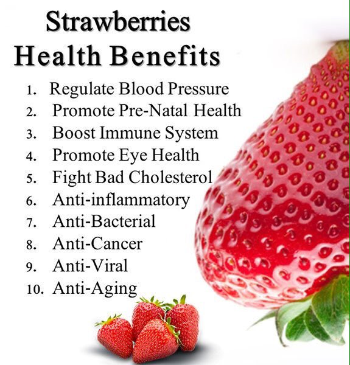

My favorite fruit in the world is Strawberry.
I love love love strawberry.
The garden strawberry is a widely grown hybrid species of the genus Fragaria, collectively known as the strawberries.
It is cultivated worldwide for its fruit. The fruit is widely appreciated for its characteristic aroma, bright red color, juicy texture, and sweetness. It is consumed in large quantities, either fresh or in such prepared foods as preserves
Delicious and sweet, the nutrient-packed strawberry is naturally low in sugar and low in calories and extraordinarily high in antioxidants.
Incorporating this superstar food into your daily diet delivers multiple health benefits.
One serving 100gms of strawberries contains approximately 33 kilocalories. Strawberries are excellent source of vitamin C, a good source of manganese, and provides several other vitamins and dietary minerals.
Strawberries contain a modest amount of essential unsaturated fatty acids in the achene (seed) oil.
Fresh, frozen, or dried strawberries are low in calorie and most research shows that you only need to eat one serving of strawberries at least three times per week to see health benefits